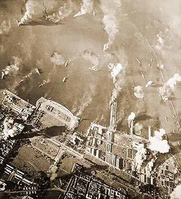
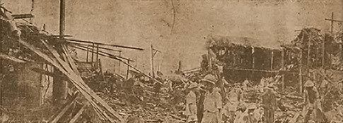
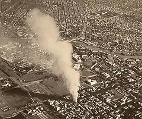

|
j
a v a s c r i p t |
November 14, 1944

Manila Bay Strike
The encore started at 0800, concentrating on the Bay and Port Area. I counted 66 American planes dive-bombing, and there must have been double that number. At 0900 I ducked in for a quick shower and missed the second heavy raid. An hour later I scurried over to Maurice's and watched a couple of smaller waves dive efficiently over their targets mostly at the Bay and the Nichols Field extension. Two huge fires that began yesterday were still going, and I believe that their ending this afternoon meant both tankers had sunk. American flyers started fifteen fires in the morning and several more later, but as the afternoon wore on it became evident that they had run out of "profitable targets" as Nimitz would say. We saw three Japanese planes shot down in very uneven contests. One attempting to land on Nichols was down to 100 feet when an American fighter pounced and drilled him. The victor then made a full-power, climbing about-face as the antiaircraft barrage opened up. And I'll never forget the sound and sight of 17 planes appearing out of the clouds in fast power dives heading for the burning ships. It happened so suddenly that they had finished and gone by the time the puffs of flack appeared. I'm pretty certain the bombing was just "mopping up." Tribune: "U.S. battleship, 10 transports sunk or damaged in Leyte Gulf ... Nippon Wild Eagles make death charge on U.S. Fleet units" — a kamikaze attack of the Banda Air Unit on November 12. Four pilots are named: Corporal Sasaki, Sergeant Kubo, Sergeant-Major Tanaka, and the escorting fighter of Corporal Shiro Watanabe, who engaged some P-38s. The new box score now totals 367 ships including 53 carriers and 17 battleships. "Enemy Terror Tactics Hit New High as Raiders Bomb, Strafe, Residential Sections" — San Nicolas, Intramuros, Pandacan, Santa Ana, Paco and Sampaloc.

"These Were Homes Once" — San Nicolas

Ermita Fire
"Hundreds of Filipinos believed killed or wounded in Manila raid." The terror theme is new; yesterday La Vanguardia said the objectives were the airfields and shipping. Most of the residential districts named are adjacent to targets except Sampaloc. The casualties there were due to antiaircraft shrapnel. La Vanguardia confirmed that yesterday was the worst day for civilians. A direct hit at the corner of Isaac Peral, A. Mabini and Cortada killed some prominent people in Ermita and destroyed a drugstore and several big houses. I've left for the very end today the guerilla attack last night on the P. Burgos School. It happened between 0100 and 0200, in pitch dark and under full blackout. Both sides pot-shotted each other with non-automatic fire for a full 15 minutes, firing about 200 rounds each. Then the scene shifted to the Santa Mesa Bridge where the guerrillas made their getaway. The Japanese brought some bloodhounds and German Police Dogs at 0500 from their kennels at Arlegui — all they did was bark madly and continuously. No one knows much about the attack. I was too sleepy to bother much. |
|
|
|
|